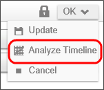
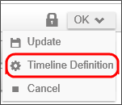

One of the things that makes Process Timelines so useful, is the ability to see how the process performs in the real world, as opposed to the way the Process Timeline was designed. Process Director enables this through the Analyze Timeline function. Since we do not have a working process with historical data to analyze yet, there is little to analyze in our current Process Timeline, but you should be aware of this analysis capability.
Figure 86: Analyze Timeline
In the Timeline definition screen of any Process Timeline, clicking the Analyze Timeline menu option opens the Process Timeline in the analysis view.

Figure 87: Analyze Timeline Menu
Process Director analyzes all previous instances of the Process Timeline. Based on the actual times recorded from those instances, the analysis view projects the expected start dates, end dates, and durations for each activity in the process. The Analyze Timeline view allows you to easily see how the actual performance of the process compares to the configured performance.
In the analysis view, the triangles represent the projected start and end dates for each activity in the Process Timeline. These triangles are superimposed over a gray activity bar that indicates the time period during which the activity is configured to occur.
Red triangles indicate that the start or end date for an activity is projected to occur later than the activity's configuration indicates. The red triangles can mean that the activity's duration is projected to take longer than configured, but this is not necessarily true. For example, an activity's duration may be projected to take less time than configured, but if the activity is projected to start later than the configuration indicates, the triangles will still be red. Blue triangles indicate that the start or end date will occur approximately when indicated. Green triangles indicate that the activity's start or end dates are projected to occur before the configuration indicates. The line between the two triangles indicates the projected duration of the activity.
A percentage number on the activity bar indicates the percentage of time the activity actually takes to complete, on average, compared to the configured duration. A negative percentage indicates that the average activity duration is shorter than the configured duration. A positive percentage indicates the actual activity duration is, on average, longer than the configured duration.
If you move your mouse over the triangles, a tooltip will pop up will appear that displays more statistical information about the activity. The tooltip displays comparisons between actual and configured end dates and durations.

Figure 88: Rollover Tooltip in Analysis View
So, if we use this information to analyze the Process Timeline shown in Figure 88: Rollover Tooltip in Analysis View, above, we can see that the Initial Approval activity takes slightly less than two workdays to complete, on average, which is 61% faster than the activity's configured duration of three workdays. Similarly, the Finance Approval activity has taken, on average, 66% less time than configured. Overall, the average process time for this Process Timeline is two workdays, compared to the configured duration of 5 workdays.
The analysis view makes it easy to compare actual process times to configured times. It shows you where bottlenecks or delays are occurring in your processes. Over time, using Analyze Timeline gives you the information you need to identify and solve trouble spots and bottlenecks.
You can revert to the Process Timeline's definition view from the analysis view by clicking the Timeline Definition button that is displayed above the Timeline.

Figure 89: Timeline Definition Menu